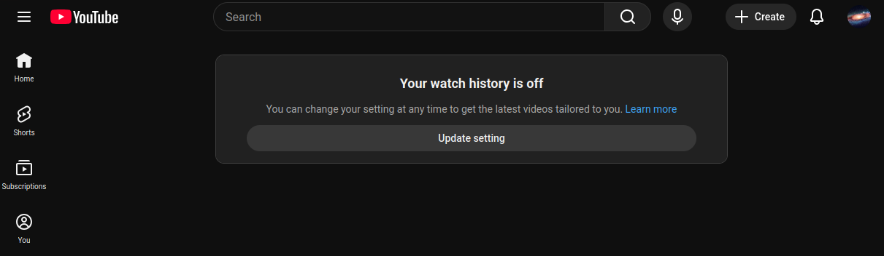

🌻 Summer Disconnect Challenge 🌻
Overview
What?: For this summer I will be changing the way I interact with the internet, avoiding many of the platforms and features that prioritze maximizing engagement. Instead, I will adopt a more focused and intentional approach.
I am a bit fatigued with the way we interface with technology these days. Algorithmic feeds, divisive discourse, smartphones, LLMs. I just want to experience what it is like to intentionally remove these kinds of things in everyday life.
When?: This will run from May-August 2026.
Why?: I think the majority of people can relate to a feeling of fatigue regarding our current digital landscape; I just want to see what it feels like to take a step away from it.
What I will avoid
1. Passive usage of social platforms: Visiting any website with the intention to scroll mindlessly.
2. Infinite scroll: Avoiding using apps that have infinite scroll features.
3. Recommendation algorithms: Platforms that deliver content based on recommendation algorithms.
4. Short-form content: Reels, Shorts, etc.
What I use now
I currently have accounts on: YouTube, Twitch, Discord
I DO NOT have accounts on: Facebook, Instagram, Snapchat, TikTok, Reddit
I am already avoiding most social media platforms. Further, I have turned off watch history on my YouTube, which gets rid of suggestions on the homepage (it looks like this if you haven't seen)

However, I am still spending a considerable amount of time watching YouTube videos and I would like to cut back on this. I also watch livestreams on Twitch fairly regularly.
What to do instead
1. Read some books I have been neglecting.
2. Start and/or finish programming projects I have been thinking about.
3. Spend more time outdoors.
4. Create more (videos, stream, etc.)